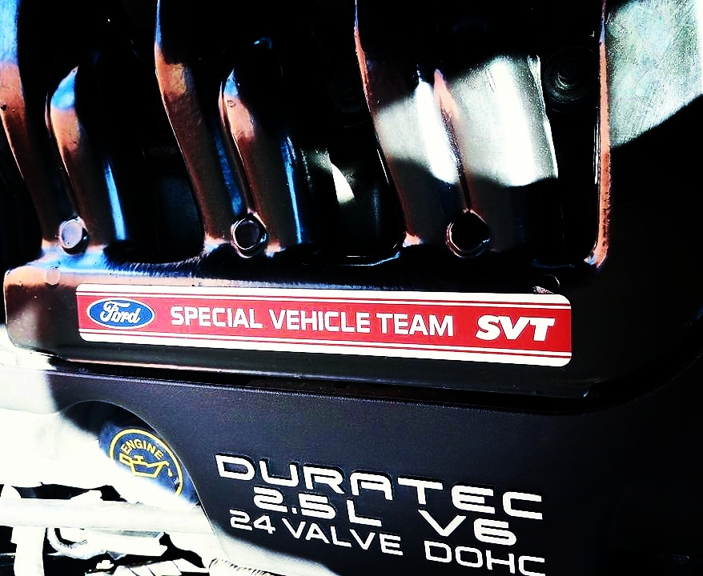
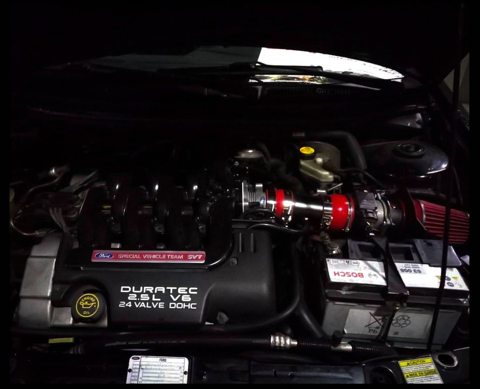
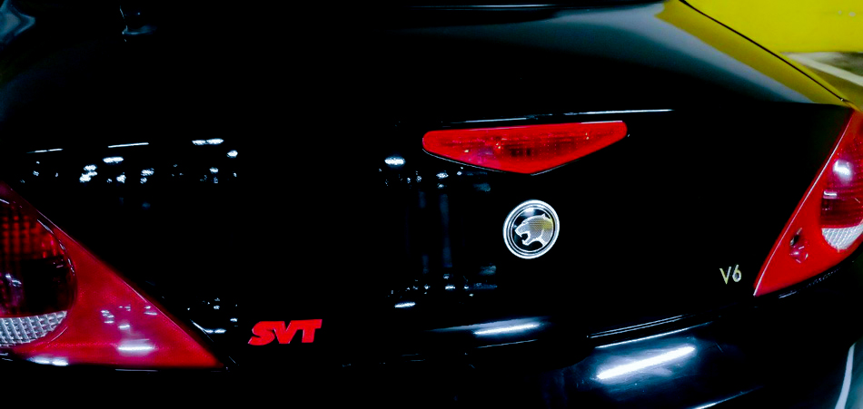
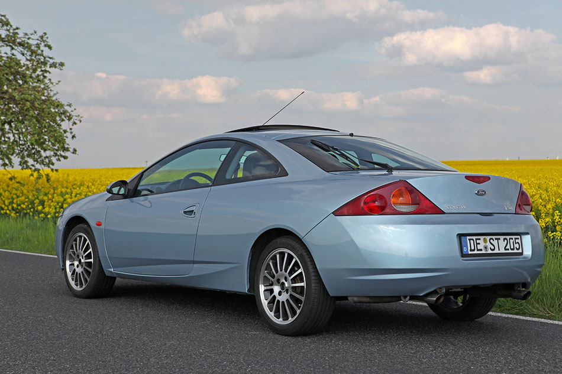
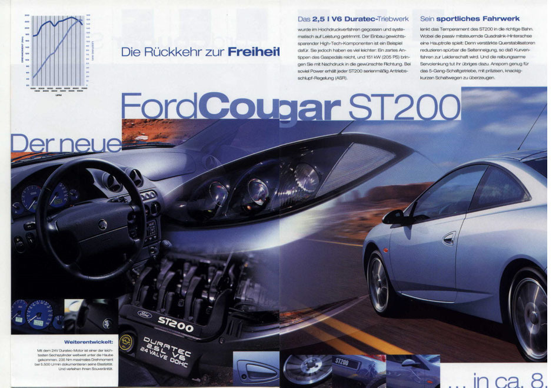

SPECIAL VEHICLE TEAMSVT & ST200
SPECIAL VEHICLE TEAM (SVT)
Il reparto sportivo Ford negli Stati Uniti
SVT, acronimo di Special Vehicle Team, era la divisione ad alte prestazioni di Ford negli Stati Uniti, nata per sviluppare versioni sportive e tecnicamente evolute dei modelli di serie. Per molti aspetti può essere considerata l'equivalente americano del reparto Ford RS europeo.
Nel corso degli anni Ford ha progressivamente avvicinato i propri programmi sportivi internazionali, fino ad arrivare alla moderna divisione globale Ford Performance, che ha raccolto l'eredità sia di SVT sia dei reparti sportivi europei.
SVT STEP 1
Nel 1998 il team SVT sviluppò una prima evoluzione del motore Duratec V6 2.5, portando la potenza a circa 195 CV e la coppia a 224 Nm.
Le modifiche comprendevano:
- corpo farfallato maggiorato;
- sistema di aspirazione migliorato;
- filtro aria ad alte prestazioni;
- collettore di aspirazione rivisto;
- alberi a camme specifici;
- volano alleggerito;
- scarico meno restrittivo.
Questa configurazione non venne mai installata ufficialmente sulla Ford Cougar di serie.

Kit di aspirazione SVT installato su un Duratec V6 2.5
SVT STEP 2
Nel 1999 SVT introdusse una seconda evoluzione del Duratec V6, portando la potenza a 205 CV e la coppia a 229 Nm.
Questa versione del motore equipaggiò:
- la Ford Mondeo ST200 nel mercato europeo;
- la Ford Contour SVT nel mercato nordamericano.
Molte Cougar americane che oggi espongono loghi SVT non sono modelli ufficiali Ford, ma elaborazioni realizzate dai proprietari utilizzando componenti provenienti dalle Contour SVT.


Badge SVT su una Cougar elaborata con componenti Contour SVT
FORD COUGAR ST200
Un progetto arrivato a un passo dalla produzione
Nel 1999 Ford valutò la commercializzazione di una versione ad alte prestazioni della Cougar destinata principalmente ai mercati europeo e britannico.
Per il progetto vennero realizzati prototipi e veicoli di pre-produzione utilizzati per:
- test tecnici;
- procedure di omologazione;
- servizi fotografici;
- presentazioni stampa;
- materiale promozionale.
Furono preparate campagne pubblicitarie, documentazione tecnica e materiale destinato alla rete commerciale.
Tutto lasciava presagire l'arrivo sul mercato della Ford Cougar ST200.

Ford Cougar ST200, vista posteriore
LA CANCELLAZIONE DEL PROGETTO
Nonostante lo sviluppo fosse ormai nelle fasi finali, Ford decise di interrompere il progetto poco prima dell'avvio della produzione.
Le motivazioni furono principalmente commerciali e legate alle prospettive di vendita del modello nei mercati europei.
La Cougar ST200 non entrò quindi mai ufficialmente in produzione e non raggiunse mai la rete dei concessionari.
GLI ESEMPLARI SOPRAVVISSUTI
Secondo le informazioni raccolte dalla community tedesca RedCougar.de, la quasi totalità dei prototipi e delle vetture di pre-produzione venne demolita.
Attualmente risultano ancora esistenti soltanto tre esemplari originali di Cougar ST200, custoditi da collezionisti tedeschi.
Per questo motivo la Cougar ST200 è oggi considerata una delle varianti più rare e misteriose mai sviluppate sulla piattaforma Ford Cougar.

Una delle tre Cougar ST200 originali ancora esistenti
LE CONVERSIONI ST200
Le Cougar comunemente identificate come "ST200" presenti sulle strade europee non sono generalmente esemplari ufficiali Ford.
Nella maggior parte dei casi si tratta di conversioni private realizzate utilizzando componenti meccanici provenienti da Ford Mondeo ST200 o Contour SVT, mantenendo però la carrozzeria originale della Cougar.
Queste elaborazioni rappresentano ancora oggi una delle modifiche più apprezzate dagli appassionati del modello.
Fonte storica: RedCougar.de e documentazione Ford dell'epoca.